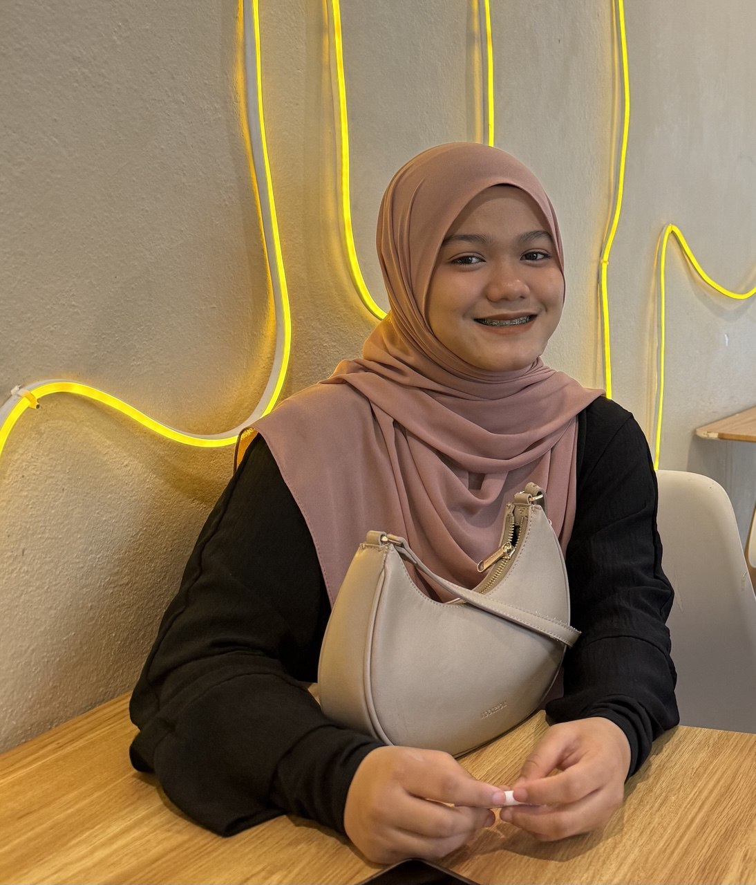

| Personal Information | |
|---|---|
| Name | Nur Aqlima Binti Mohd Hilmi |
| Call Me | Ima |
| Date of Birth | 24 / 4 / 2005 |
| Number of Siblings | 6 out of 6 |
I’m the youngest in a family of six siblings with a twin of the opposite gender, an older sister and four older brothers. Growing up in a big family has been fun and sometimes chaotic but it’s also taught me a lot about patience and getting along with different personalities. Both of my parents are primary school teachers. so, learning and curiosity have always been a big part of my life.Two of my siblings are already married which makes family gatherings even more interesting and lively. I was born at HUSM Kubang Kerian, but I’ve lived in Besut my whole life and it’s really where I feel at home. Being the youngest means I’ve always had people to look up to and sometimes compete with but it also means I’ve learned to speak up for myself and find my own place in the family.Living with such a big family has definitely shaped who I am today. I’ve learned how to balance fun with responsibility, how to be supportive but independent and most importantly, how to appreciate the little moments with the people you love.
This is where I live